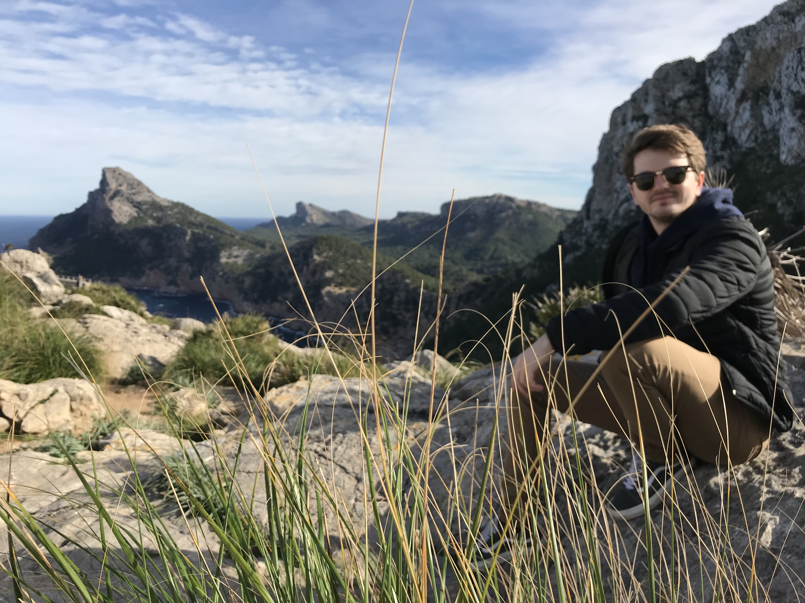

Lewis A. Jones, PhD
Postdoctoral Research Fellow
Mapas Lab, Centro de Investigación Mariña, Universidade de Vigo
LewisAlan.Jones@uvigo.es

I am a computational palaeobiologist investigating the drivers of biodiversity patterns across a range of temporal and spatial scales. My research primarily focuses on the co-evolution of life and the environment, and evaluating the influence of data incompleteness on our perceptions of the geological past. To do so, I integrate a range of interdisciplinary tools and sources of information, such as ecological niche modelling, fossil occurrence data, and palaeoclimatic models to estimate species’ distributions in deep time. I am currently a Postdoctoral Research Fellow in the Mapas Lab at the University of Vigo, where I study the constraints and drivers of spatial biodiversity patterns in the fossil record.
To date, my research has primarily focused on marine invertebrates and ecosystems, particularly scleractinian corals and warm-water coral reefs. I also collaborate with numerous fantastic researchers on projects related to the non-avian dinosaurs, mammals, and palaeoclimate, check them out!
If you are interested in joining our lab, please feel free to get in contact. We will periodically advertise opportunities for student projects, and we welcome researchers wanting to do a short stay.
Research Interests
Analytical palaeobiology, macroecology and biodiversity, fossil record bias, corals and reef ecosystems, palaeoclimate, ecological niche modelling, and R programming.